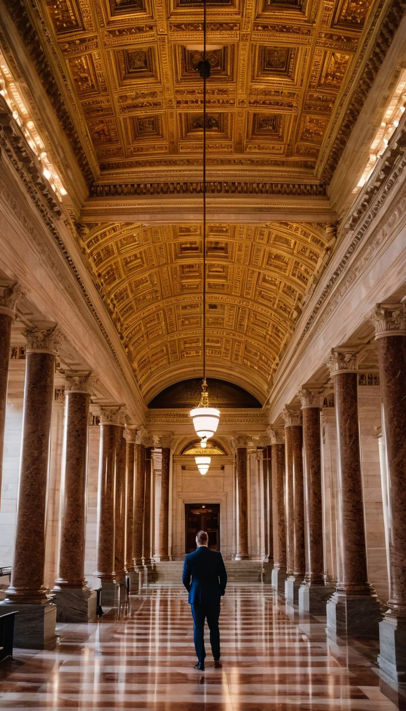
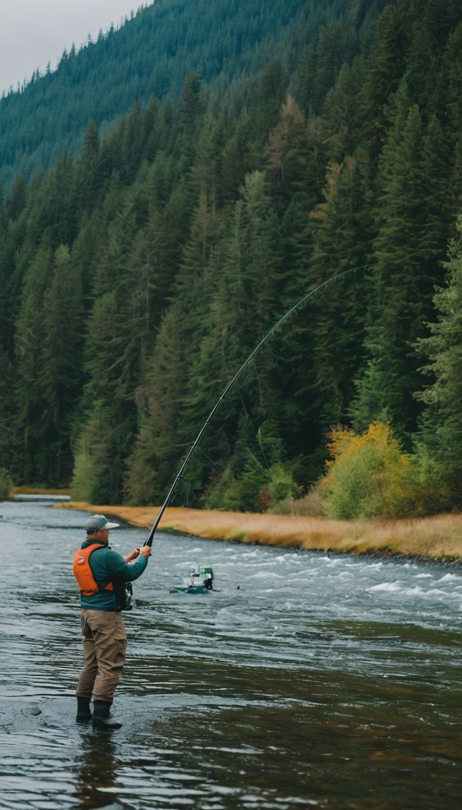

Olympia is the capital city of Washington State and is located on the south end of the Puget Sound. Known for its vibrant arts, rich history, and beautiful waterfronts, Olympia offers a blend of cultural and natural attractions. The city offers several parks, museums, and historical landmarks.
The Olympia Yacht Club, was founded in 1889 in Olympia, Washington. It is one of the oldest marinas in the Pacific Northwest. It provides members with access to South Puget Sound and offers boating events, social activities, and educational programs.
This museum in Olympia features interactive exhibits and educational programs on Washington's history and culture, including Native American heritage and regional roles.
Imagine Children's Museum interactive museum in Olympia offers hands-on exhibits for children to learn through play, covering topics like science, art, and community life. This museum is a delight for younger audiences with many locations around the Puget Sound.
|
Popular Attractions
|
Washington State CapitolWashington State's Capitol is Olympia, a city of historic government buildings known for their colonial architecture and victorian gardens. Guided tours are available.
|

|
|
Outdoor Recreation
|
Outdoor RecreationOlympia offers outdoor activities with scenic views of water and forests. Popular spots include Percival Landing Park and Olympia Forest.
|

|
Explore more about Washington State on Wikipedia.
Legal Disclaimer: All images on this page are CGI and are not intended to depict any real person. This is an educational prototype website designed to demonstrate HTML, CSS, and JavaScript basics.